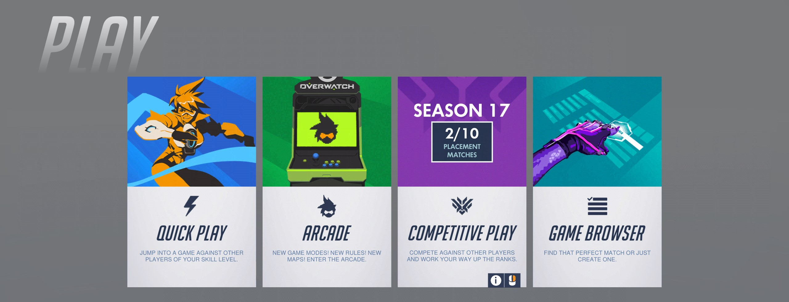
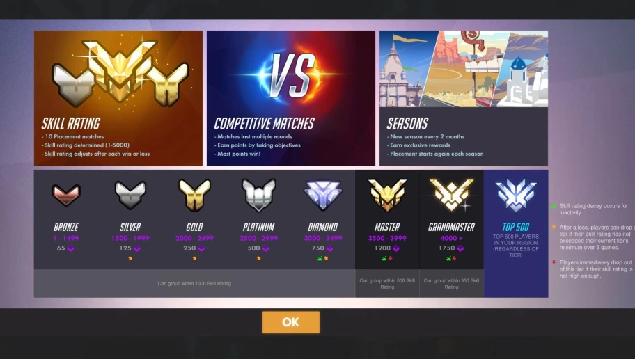

Overwatch League is an professional esports league for the video game Overwatch. The game Overwatch is created by its developer, Blizzard Entertainment. It is a First-Person Shooter game. There are different modes; Arcade, Quick play, Competitive, and Custom Games.

All of the Overwatch League players are in the top rank, top 500. There are 8 ranks in total for Overwatch. Bronze, silver, gold, platinum, diamond, masters, grandmasters, and top 500. Bronze is the bottom 5%, silver is the bottom 20%, gold is the bottom 50%, platinum is the top 49%-22%, diamond is the top 23%-6%, master is the top 6% to 1.5%, and grandmaster is the top 1%. Top 500 is often the top 0.25%, but it depends on how many people play that season. Each season lasts for 2 months.

A regular season is divided into four stages. Each regular season stage lasted five weeks, with the first three stages ending with a short playoff of the top teams based on that stage's records to determine stage champions. Teams played 28 matches across the regular season, playing teams both within and outside their division. The post-season playoffs used teams' overall standings across all stages. The top standing team in both divisions received the top two seed in the playoffs, followed by a fixed number of teams determined from across both divisions, as well as two slots open to the winners of an elimination tournament from the remaining top teams across both divisions. An All-Star weekend is also held, featuring two division-based teams selected by League representatives and voted on by fans.
Teams are awarded with monetary prizes for how they place at the end of the regular season, as well as for participating and placing high in the stage playoffs and post-season tournament. For example, the first season had a total prize pool of US$3.5 million available, with the top prize of $1 million awarded to the post-season championship team.